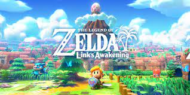

The Legend of Zelda Link's Awakening has been remade 2 times. That means it has been made for 3 systems. It has been made for the Gameboy, Gameboy Color, and now the Switch.

the legend of
Zelda Link's AwakeningThe Legend of Zelda Link's Awakening has been remade 2 times. That means it has been made for 3 systems. It has been made for the Gameboy, Gameboy Color, and now the Switch.